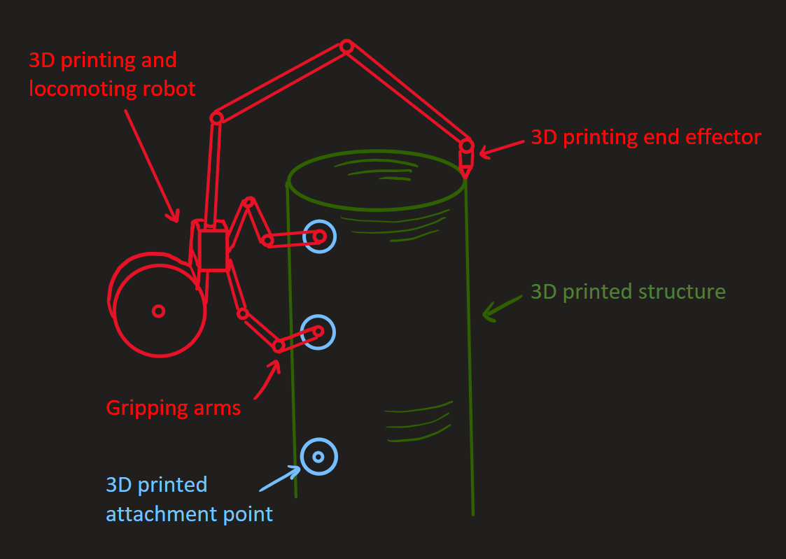
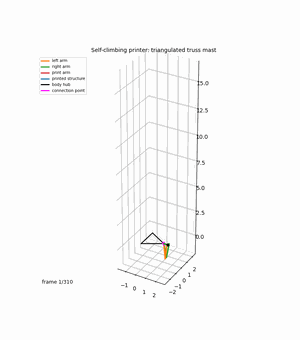
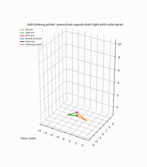

Concept · In Progress
The 3D-Printing Spider Bot
A concept for a 3D printer that moves along the very structure it prints, using robotic arms to climb, anchor, and extrude — enabling a small satellite to build megastructures far larger than itself.
The bot in action (conceptually) — click it.
The problem
Traditional space structures are limited by the size of a rocket's payload fairing. Anything big — solar arrays, antennas, habitats, truss backbones for space stations — has to be folded, packed, launched, and unfolded, or assembled piece-by-piece by astronauts or teleoperated arms. That caps how large and how cheap "big" can be.
More broadly, what's needed is a manufacturing system for space and the Moon that is autonomous, universal (capable of making any structure, irrespective of complexity or size), and still small and efficient enough to launch affordably.
The idea
Instead of launching the whole structure, launch a small robot that prints the structure in orbit, then walks along what it just printed to keep printing more. Picture an inchworm: it anchors its rear feet, extends a printhead-tipped arm forward to extrude the next segment of truss, then grips that new segment and pulls the rest of its body forward — repeating indefinitely.
Because the robot never needs to be bigger than a single truss bay, a satellite far smaller than the final structure could, in principle, print a truss kilometers long — solar farms, telescope backbones, habitat frames — using local or launched feedstock.
By integrating attachment points directly into the printed structure, the same cycle of print, then move repeats indefinitely, which effectively makes the printer's build volume infinite. Anchoring to features it just printed also avoids the much harder problem of gripping a structure with a free-floating robot.
Concept media
Early concept diagram and crawl-cycle animations from the initial proposal write-up.



How it would work
- Anchor. Rear gripper locks onto the last printed truss node.
- Extrude. A forward arm, tipped with an extrusion head, lays down the next truss segment — beams, nodes, and diagonals.
- Cure. The freshly printed segment sets (thermally, chemically, or via UV) enough to bear the robot's own weight.
- Advance. The front gripper clamps the new segment; the rear releases and the body arches forward, inchworm-style.
- Repeat. The cycle continues, growing the truss one bay at a time, in any direction the mission needs.
Why it matters
This approach decouples structure size from launch vehicle size. A single small, reusable printer-robot could, over time, build structures orders of magnitude larger than itself — the same way a spider spins a web far bigger than its own body. That could make space-based solar power, large-aperture telescopes, and orbital habitats dramatically more feasible.
Pushed further, the same principle underpins a lot of the more science-fiction-flavored goals that motivate this work:
Open questions I'm chasing
Next step
From here, the plan is to either build a simulation of the robot or a working terrestrial prototype — whichever lets me validate the anchor/extrude/advance cycle fastest. See the Dev Log for how that's going.